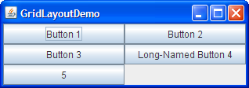

The following figure represents a snapshot of an application that uses the
Note: This lesson covers writing layout code by hand, which can be challenging. If you are not interested in learning all the details of layout management, you might prefer to use theGroupLayoutlayout manager combined with a builder tool to lay out your GUI. One such builder tool is the NetBeans IDE. Otherwise, if you want to code by hand and do not want to useGroupLayout, thenGridBagLayoutis recommended as the next most flexible and powerful layout manager.GridLayoutclass.
 Click the Launch button to run GridLayoutDemo using Java™ Web Start (download JDK 6). Alternatively, to compile and run the example yourself, consult the example index.The complete code of this demo is in the GridLayoutDemo.javafile.A
GridLayoutobject places components in a grid of cells. Each component takes all the available space within its cell, and each cell is exactly the same size. If theGridLayoutDemowindow is resized, theGridLayoutobject changes the cell size so that the cells are as large as possible, given the space available to the container.The code snippet below creates the
GridLayoutobject and the components it manages.The constructor of theGridLayout experimentLayout = new GridLayout(0,2); ... compsToExperiment.setLayout(experimentLayout); compsToExperiment.add(new JButton("Button 1")); compsToExperiment.add(new JButton("Button 2")); compsToExperiment.add(new JButton("Button 3")); compsToExperiment.add(new JButton("Long-Named Button 4")); compsToExperiment.add(new JButton("5"));GridLayoutclass creates an instance that has two columns and as many rows as necessary.Use combo boxes to set up how much vertical or horizontal padding is put around the components. Then click the Apply gaps button. The following code snippet shows how your selection is processed by using the
setVgapandsetHgapmethods of theGridLayoutclass:applyButton.addActionListener(new ActionListener(){ public void actionPerformed(ActionEvent e){ //Get the horizontal gap value String horGap = (String)horGapComboBox.getSelectedItem(); //Get the vertical gap value String verGap = (String)verGapComboBox.getSelectedItem(); //Set up the horizontal gap value experimentLayout.setHgap(Integer.parseInt(horGap)); //Set up the vertical gap value experimentLayout.setVgap(Integer.parseInt(verGap)); //Set up the layout of the buttons experimentLayout.layoutContainer(compsToExperiment); } });

The GridLayout API
The following table lists constructors of the
GridLayoutclass that specify the number of rows and columns.
The GridLayoutclass constructorsConstructor Purpose GridLayout(int rows, int cols)Creates a grid layout with the specified number of rows and columns. All components in the layout are given equal size. One, but not both, of rowsandcolscan be zero, which means that any number of objects can be placed in a row or in a column.GridLayout(int rows, int cols, int hgap, int vgap)Creates a grid layout with the specified number of rows and columns. In addition, the horizontal and vertical gaps are set to the specified values. Horizontal gaps are places between each of columns. Vertical gaps are placed between each of the rows. The
GridLayoutclass has two constructors:
Examples that Use GridLayout
The following table lists code examples that use theGridLayoutclass and provides links to related sections.
Example Where Described Notes GridLayoutDemoThis page Uses a 2-column grid. ComboBoxDemo2How to Use Combo Boxes One of many examples that use a 1x1 grid to make a component as large as possible. LabelDemoHow to Use Labels Uses a 3-row grid. DragPictureDemoIntroduction to Drag and Drop and Data Transfer Uses a 4-row grid to present 12 components that display photographs.